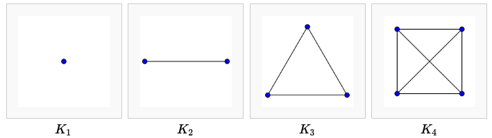
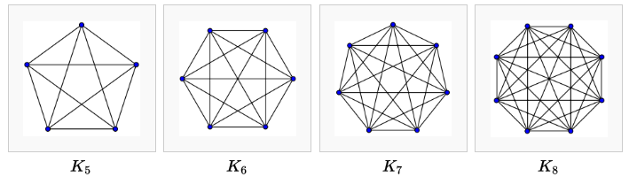

Az első 8 teljes gráf ábrája
Gráfnak nevezzük pontoknak és éleknek a halmazát, ahol az élek pontokat kötnek össze, illetve az élekre pontok illeszkednek úgy, hogy minden élre legalább egy, legfeljebb két pont illeszkedik.
A gráfokpontjait egyszerűen pontoknak nevezzük, de használatos a csúcspont (csúcs), szögpont elnevezés is.
Ha egy élre két pont illeszkedik, akkor azt mondjuk, hogy az az él két pontot köt össze. Megtörténhet, hogy ugyanazt a két pontot kettő vagy több él köti össze, akkor ezeket párhuzamos (vagy többszörös) éleknek nevezzük. Ha egy élre egy pont illeszkedik, azaz egy él végpontja azonos, akkor azt az élt hurokélnek nevezzük. Ha egy gráfban nincsenek párhuzamos élek és nincs hurokél, akkor azt egyszerű gráfnak nevezzük.
Ha egy gráfnak mindegyik pontjából pontosan egy-egy él vezet a gráf összes többi pontjához, akkor azt teljes gráfnak nevezzük. Az n csúcsú teljes gráfot Kn-nel jelöljük Kazimierz Kuratowski lengyel matematikus emlékére. Kn tulajdonságai:
Eredmény: